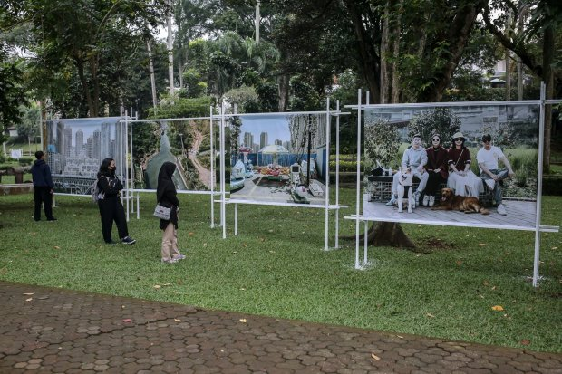

Internal Photo Festival (JIPFest)
Jakarta Internal Photo Festival (JIPFest) adalah platform bagi fotografer dan publik untuk bertemu, berdialog, dan bertukar gagasan; serta arena bagi proyek-proyek fotografi untuk menjalankan khalayak luas. Sebagai festifal internasional, JIPFest juga bertujuan menyemai dan membawa fotografer indonesia ke panggung dunia.
Fotografi memiliki kekuatan yang bisa dipakai untuk beragam tujuan, termasuk edukasi dan advokasi, juga mobilisasi dan perubahan kami terhadap, JIPFest bisa menjadi platform untuk menampilkan karya-karya yang menyoroti isu krusial, menciptakan dialog dan memperkaya perspektif publik, serta di saat bersamaan meningkatkan kapasitas fotografer dalam menghasilkan karya yang berpengaruh. JIPFest beriktikad memberi sumbangsih positif kepada masyarakat.
